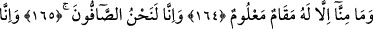
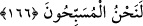

164, 165, 166. (Melekler şöyle derler:) Bizim her birimiz için, bilinen bir makam
vardır. Şüphesiz biz, orada sıra sıra dururuz ve şüphesiz Allah’ı tesbih ederiz.
“(Melekler şöyle derler:) Bizim her birimiz için, bilinen bir makam vardır.” Bu
kavl-i ilâhî meleklerin kendilerine ibadet edenleri reddetmeyi îtiraf etmelerinin
hikayesidir. Sanki sizin “Allah’ın kızlarıdır” diyerek kendilerine ibadet ettiğiniz ve
Allah ile aralarında münasebet ve ortak bir cinsiyet var olduğuna inandığınız melekler
“Bizim her birimiz için, bilinen bir makam vardır” derler.
Yani bizim her birimizin mârifet, ibadet ve âlemin tedbirinde Allah’a vâsıl olmakta
belli bir mertebesi vardır. Bizden her biri tespit edilen bu mertebede bulunmak
durumundayız. Bulunduğu bu mertebeden tırnak kadar ne ileri geçebilir ne de geri
kalabilir. Bu durum Allah Teâlâ’nın azamet, heybet ve celâline karşı gösterilen tevâzû,
saygı ve teslimiyettir.
Rivâyete göre meleklerden bazıları devamlı rükû halindedir; hiç belini doğrultmaz.
Bazıları secde halindedir; başını hiç secdeden kaldırmaz. Bu kavl-i ilâhî meleklerin
Allah’ın kızları, evlatları olduğu sözünün fâsit olduğunu tenbih etmektedir. Zira
meleklerin kulluklarını izhar edip ortaya koymalarında böyle mübalağa etmeleri, onların
kendi kulluklarını itiraf etmeleridir. Böyle Allah’a kul olan yaratıklarla Allah arasında
nasıl bir cinsiyet nispeti olabilir ki?!
İbn Abbas (r.a.) der ki, göklerde her bir karış yerde bir melek ya namaz kılıyor, yahut
tesbih ediyordur. Hatta bütün bir âlem ruhlarla doludur. Yine âlemde bulunan bir ev
yahut bir zâviye mahiyetini yalnız Allah Teâlâ’nın bildiği şeylerle mâmur ve bayındır
durumdadır. İşte bundan dolayı Hz. Peygamber (s.a.) halvet ve yalnızlık hallerinde bile
tesettür ve örtünme ile emretmiştir. Kişinin eşiyle cinsi birlikteliklerinde bile tamamen
çıplak olmamalarını tenbihlemiştir.
Süddî der ki: Her bir meleğin kurbet ve müşâhede gibi bilinen belli bir makamı
vardır. Ebû Bekr el-Verrâk (k.s.) der ki: “Meleklerden her birinin Allah’a ibadet
ettikleri havf, reca, muhabbet ve rıza gibi bilinen makamları (makâm-ı malûm) vardır.”
Yâni havf, recâ, muhabbet ve rızâ gibi yüksek makamlar murâd edilmiştir. Melekût
hazirelerine yakın kılınanlardan (mukarrebûn) ve ceberût dergâhının mukaddeslerinden
her biri o makamlardan birinde mütemekkindir/sâkindir.
et-Te’vîlâtü’n-Necmiyye’de der ki, âyette şuna işaret edilmektedir: Meleğin sınırını
aşamayacağı belli bir makamı vardır. Bu da ya melekî, rûhânî yahut kerrûbî melek
makamıdır. Yani Cebrail, Mikail, İsrafil ve Azrail (a.s.) gibi büyük meleklerin
makamıdır. Rûhânî olan bulunduğu makamdan kerrûbîlerin makamına geçemez. Kerrubî
olan da rûhânîlerin makamına geçemez. Buna göre melekler, bulundukları makamdan